Why does Bristol need
a Chair in One Health, Bioinformatics, and Biostatistics?
Simon Frost, MA DPhil
Dept. of Veterinary Medicine, and Institute of Public Health
University of Cambridge
Introduction
- Why does anyone need a Chair in One Health, Bioinformatics and Biostatistics?
- Definitions of these disciplines
- Why might they belong together?
- Examples of problems in global health
- Present a case study from our own work
- Challenges and opportunities
One Health
The collaborative effort of multiple disciplines — working locally, nationally, and globally — to attain optimal health for people, animals and the environment
AVMA, 2008
Bioinformatics
The study of informatic processes in biotic systems
Ben Hesper and Paulien Hogeweg, 1970
Biostatistics
The application and development of statistical theory and methods for the study of phenomena arising in the life sciences
Chin Long Chiang, 1985
When might One Health, Bioinformatics, and Biostatistics all be important?
- Emerging infectious disease
- Animal health has a direct impact on human health
- e.g. Antimicrobial resistance
- Animal health has a direct impact on human health
- Comparative pathology and medicine
- Insights may be gained from investigating similar systems in parallel
- e.g. Cancer
- Insights may be gained from investigating similar systems in parallel
- Environment
- Changes in the environment may affect both human and animal health
- e.g. Climate change and vector borne disease
- Changes in the environment may affect both human and animal health
- Microbiomes and viromes
Zoonoses
- Many emerging infections are zoonotic in nature
- HIV, Ebola, MERS, ...
- The increasing availability of sequence data allows us to ask questions such as:
- Where did an emerging disease come from?
- How many times (and when) did it jump host?
- Has there been adaptation to the new host?
Hepatitis E virus (HEV)
- HEV typically causes acute hepatitis, but is associated with increased morbidity/mortality in immunosuppressed individuals, including pregnant women
- Exists in several distinct genotypes
- Has HEV adapted to being specialised in humans?
| Genotype | Man | Pig | Other |
|---|---|---|---|
| 1 | Yes | No | |
| 2 | Yes | No | |
| 3 | Yes | Yes | deer, mongoose, rabbit, rat |
| 4 | Yes | Yes | cattle, sheep |
Global distribution of HEV genotypes
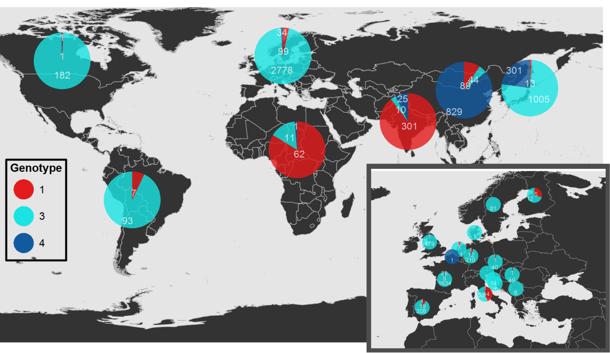
Selection in HEV
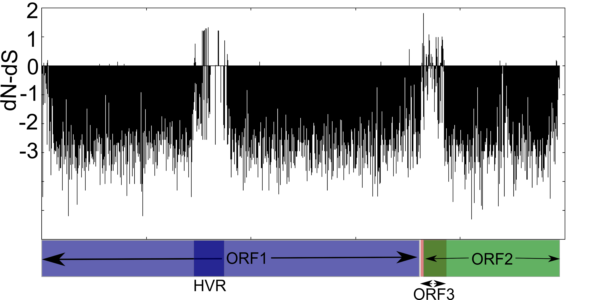
Evolutionary rates by genotype
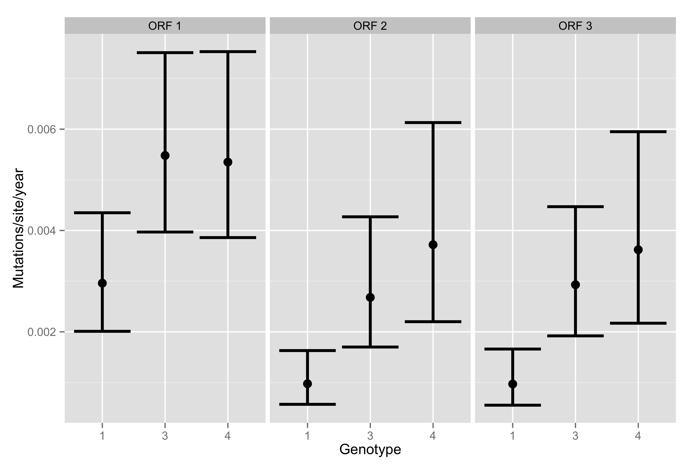
Location
Red colobus
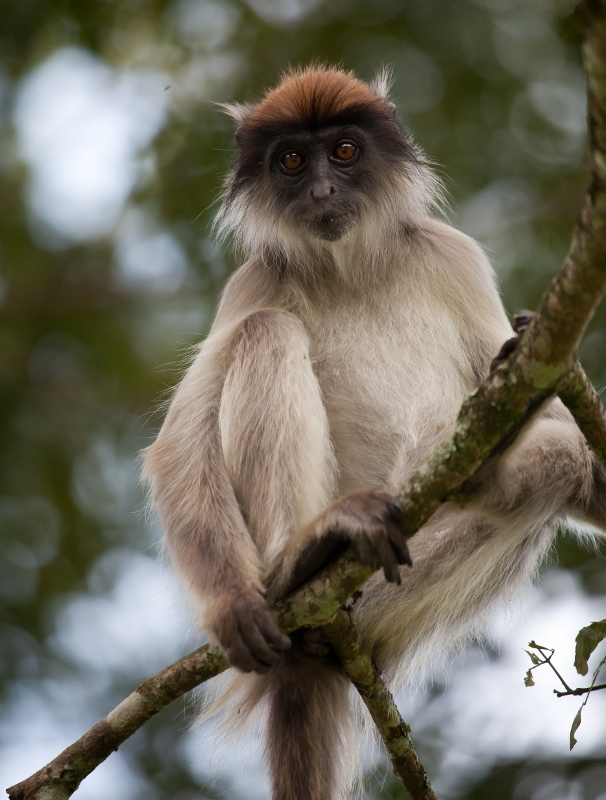
Phylogenetic analysis of primate viruses
- SIV, simian foamy virus, simian pegivirus, simian haemorrhagic fever virus...
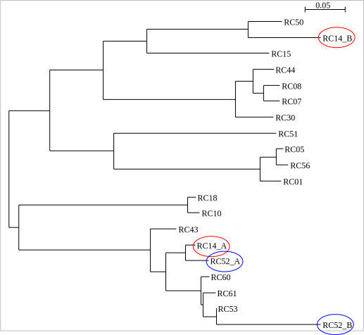
Animal injuries
(n=181 from 1240 participants)
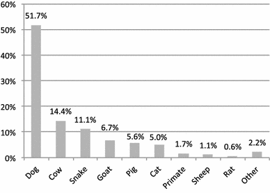
Primate contacts (n=125)
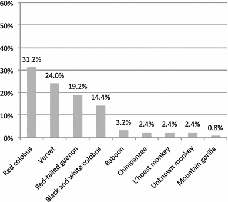
Who comes into contact with primates?
- Males (vs. females): odds ratio 3.57
- Fragment community (vs. control): OR 6.53
- Mukiga (vs. Mutooro): OR 1.93
Cross-species spillover
- Blood samples from local villagers are being tested for seropositivity to simian viruses (Bill Switzer, CDC)
- In addition, we are using simple mobile phone based methods for collecting syndromic data
Syndromic surveillance using SMS
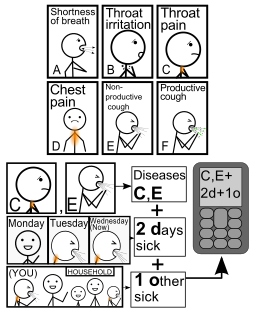
A rich source of data

Challenges
- Implementation
- Traditional delineations between fields
- Funding territories
Challenges in implementation
- Observational studies
- Utility of 'causal inference' approaches
- Big Data
- Does not refer to data that are simply large
- Are we in a 'pre-Big Data' stage?
Barriers between disciplines
[A]ll a biostatistician does is application. He relies on statisticians to develop statistical theory and methods, on probabilists for probabilistic concepts, and on mathematicians for mathematics. A biostatistician only need look up appropriate formulas and ask the computer to do the computation.
Chin Long Chiang, 1985 (tongue in cheek)
Barriers
- Different disciplines may have common goals, but different language, journals etc.
- Biostatistics vs. bioinformatics
- Statistics vs. machine learning
- Prevents cross-fertilization of ideas
- We encourage our students and postdocs to focus on a very specific field, to lend them an identity
Mathematical modeling
- Twenty years ago, mathematical modeling of infectious disease was almost a 'data free' activity
- Now, mathematical models are becoming important in lending mechanistic insights from data
The study of how epidemiological, immunological, and evolutionary processes act and potentially interact to shape viral phylogenies
Volz et al. PloS Comp Biol,
following Grenfell et al. Science 2004
Species jumps in MERS-CoV
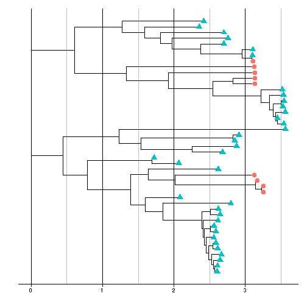
Inferred number and timing of jumps
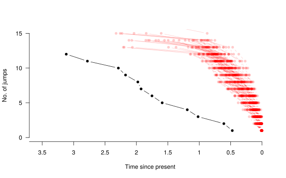
Data Science
- The field is becoming more liberal and inclusive
- Shift towards the growing discipline of 'Data Science'
- As data become more complex, data wrangling becomes more important
- Need approaches for complex data that scale well
- Current examples:
- Kaggle West Nile Virus Prediction Competition
- U.S. Government's Dengue Forecasting Project
Distribution of West Nile Virus positive mosquitoes in Chicago
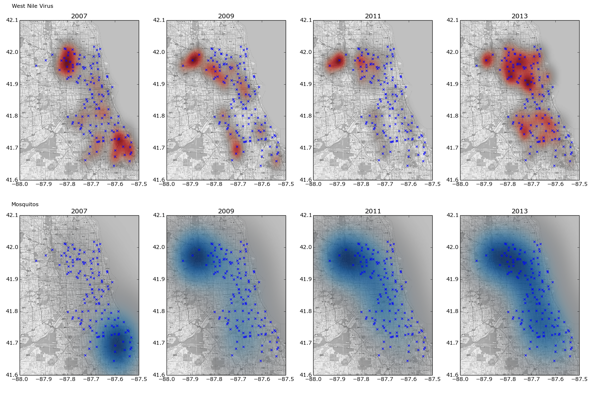
Andy Summers, Kaggle Scripts
Barriers in funding
- Although lip service is paid to the importance of One Health, austerity has led funding bodies to focus on their core mission
- MRC: human health
- BBSRC: livestock
- NERC: environment
- ESRC: social and economic issues
- Availability of funding in veterinary fields often much less than medical counterparts
- Veterinary clinical informatics
- Challenges in piecing together a cohesive programme from separate applications, and harnessing a wider variety of funding sources
Conclusions
- Everyone needs a Chair in One Health, Bioinformatics and Biostatistics
- My examples come from infectious disease, but there are many settings where the combination of these disciplines may offer more than each alone
- Only touched on the statistical issues in these data
- Frost et al. Eight challenges in phylodynamic inference
- Eames et al. Six challenges in measuring contact networks for use in modelling
- More generally, we need champions in these areas to foster collaborations and to do good science
Acknowledgements
- Cambridge:
- Adam Brayne
- James Lester
- Bethany Dearlove
- U. Wisconsin-Madison:
- Sarah Paige
- Tony Goldberg
- Sam Sibley
Microbiomes and viromes
- Increasing evidence that microbiome composition plays a central role in health and disease
- Viromes are fundamentally different than microbiomes as viruses need to infect cells to replicate
- Sequencing technology has led to improved quantification of microbiomes and viromes, and to increased capacity to discover novel pathogens
- Need for bioinformatics to help process high throughput sequencing data
- Need for biostatistical models to help identify novel pathogens, for which simple pattern matching algorithms may fail to classify
Viral discovery
- We are working on viral discovery in a number of settings:
- Idiopathic human hepatitis ('hepatitis X')
- Immunosuppressed individuals
- Pipeline to remove human DNA and RNA, leaving (hopefully) viral material
- In addition to finding known (but undiagnosed) viruses, a large number of contig sequences do not easily classify